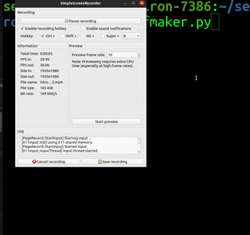
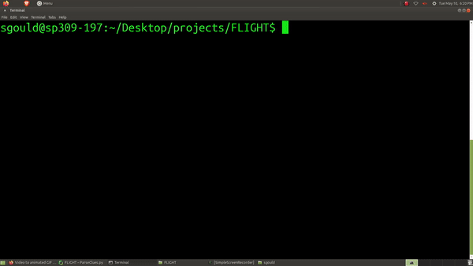
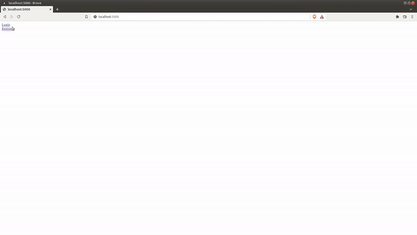
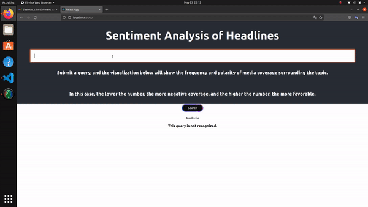
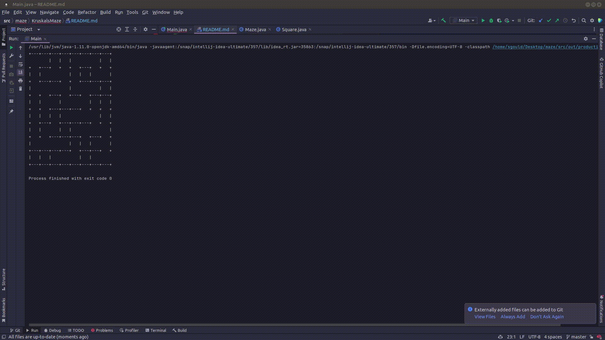

Seamus Gould
“The Answer to the Great Question... Of Life, the Universe and Everything... Is... Forty-two,' said Deep Thought, with infinite majesty and calm.”
🤖 Projects
🛫 FLIGHT
A light weight implementation of Dr. Fill, a crossword solving algorithm.
See a demonstration here:

To learn more about the algorithm, checkout the repo
📸 Finstagram
An Instagram clone built using Python, MySQL, Jinja2, HTML, CSS, and Bootstrap.

Repo
🎉 WhatsUpApp
A mobile android application made using Java, XML, Google Maps API, Firebase, and planned with UML. Unfortunately, I was unable to make a video of the application, but it does work. Repo
News Sentiment Visualization
A web application I made using react, d3, and the newsapi.org API. I always thought that it would be interesting to track the sentiment of news articles, but I found myself a bit limited by the API requests.
Luckily, I was able to retrieve one hundred articles from the newsapi.org API and visualize the sentiment of each article, though I wish I could have gotten more articles.

Repo
🌭 Seefood
A simple mobile android application made using Kotlin and TFlite.
It is based on the SeeFood app from Silicon Valley, and uses the TFLite model to detect hotdogs,
though hopefully, this model can be trained to detect other food as well.

I thought that this would be a fun project to work on, but I do not think that these people would agree.

Repo
News Sentiment Visualization
A web application I made using react, d3, and the newsapi.org API. I always thought that it would be interesting to track the sentiment of news articles, but I found myself a bit limited by the API requests.
Luckily, I was able to retrieve one hundred articles from the newsapi.org API and visualize the sentiment of each article, though I wish I could have gotten more articles.
Repo
Kruskal's Maze Generation Algorithm
A simple implementation of Kruskal's algorithm for maze generation.

Repo